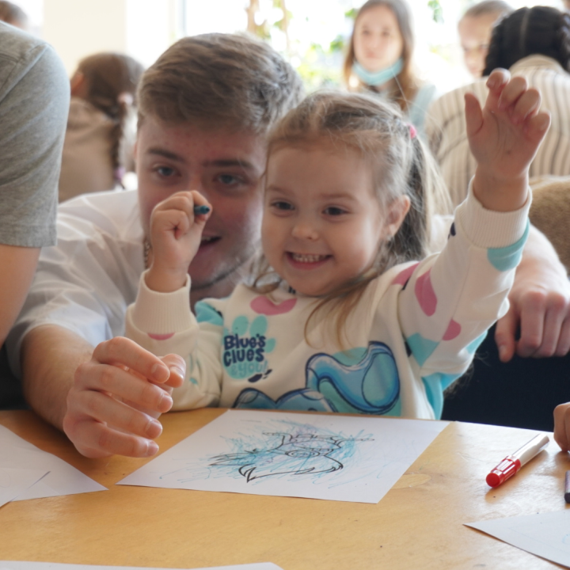

Why it's important to support
At the beginning of the full-scale war in Ukraine, I did not know what I had to do. There was simply a lost state of mind by not understanding what was happening... But I know from a personal experience that there is always an opportunity to help in such a situation, even if you are not a military person, you are thousands of kilometers away, and you do not have much money.
If you know how to do something, and have some knowledge, then you can "donate" in this way to victory by helping children, spreading information about the war in media, and helping local businesses to grow, pay taxes and provide jobs in such a difficult time.
help ukraine